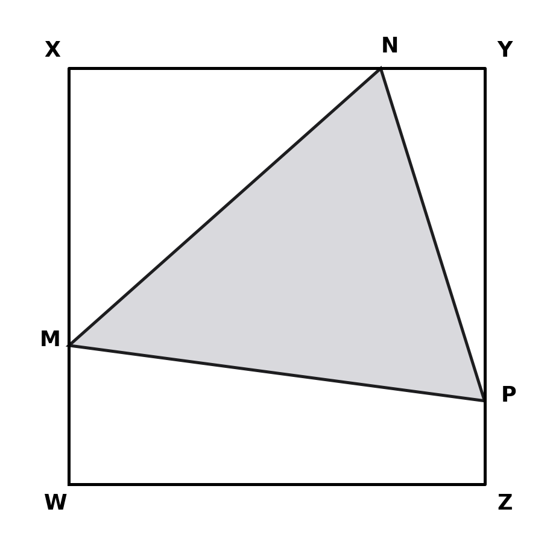
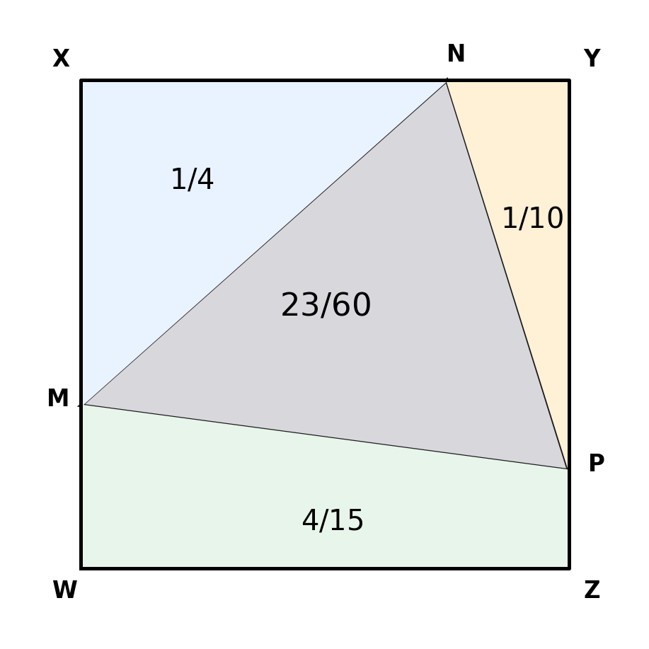

$WXYZ$ is a square of side length 1.
$WM:MX=1:2$
$XN:NY=3:1$
$YP:PZ=4:1$
What is the area of triangle $MNP$?
A $\frac13$ B $\frac25$ C $\frac9{20}$ D $\frac1{30}$ E $\frac{19}{60}$ F $\frac{23}{60}$
Status: jointly completed
[Multiple choice; mark allocation not visible in frozen evidence]
Redrawn from lesson board (no clean original available). The annotated diagram appears only in the answer working.
Each ratio gives parts of a complete side of length $1$:
$$WM=\frac13,\quad MX=\frac23;\qquad XN=\frac34,\quad NY=\frac14;$$ $$YP=\frac45,\quad PZ=\frac15.$$The square has area $1$. Outside $\triangle MNP$ are triangle $XMN$, triangle $NYP$, and trapezium $WMPZ$.
$$A_{XMN}=\frac12\left(\frac23\right)\left(\frac34\right)=\frac14,$$$$A_{NYP}=\frac12\left(\frac14\right)\left(\frac45\right)=\frac1{10}.$$The left and right parallel sides of trapezium $WMPZ$ are $WM=1/3$ and $PZ=1/5$, separated by distance $1$:
$$A_{WMPZ}=\frac12\left(\frac13+\frac15\right)(1)=\frac4{15}.$$Therefore
$$A_{MNP}=1-\left(\frac14+\frac1{10}+\frac4{15}\right).$$With denominator $60$:
$$A_{MNP}=\frac{60-15-6-16}{60}=\frac{23}{60}.$$